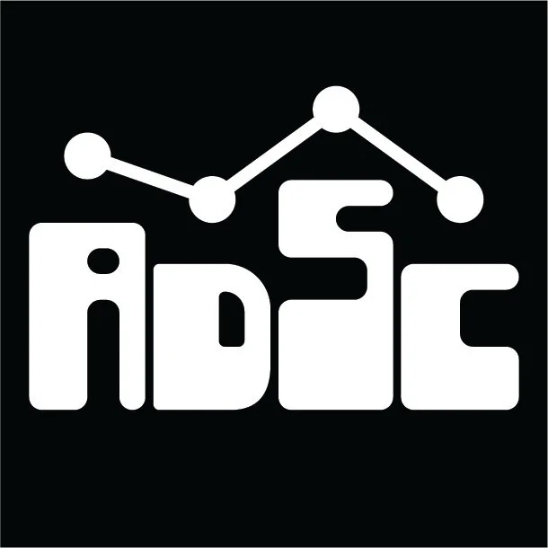

Services
Vibha Volunteering
- Worked as marketing director increasing outreach on their social medias
- Organized fundraising events to support underprivileged children
- Spent a couple hours each week creating a curriculum for underprivileged students who could not go to school
- Taught math and reading to various students in need from ages 5 to 13.
Community Volunteering
- Participated in local clean-up drives to promote environmental awareness
- Assisted in organizing community events to foster neighborhood connections
- Volunteered during religious and cultural events hosted by the community

Aggie Data Science Club
- Teach various data science concepts and tools to club members
- Organize workshops and study sessions to enhance learning
- Provide opportunities to members of the club to better enhance their knowledge and gain an interest in data science